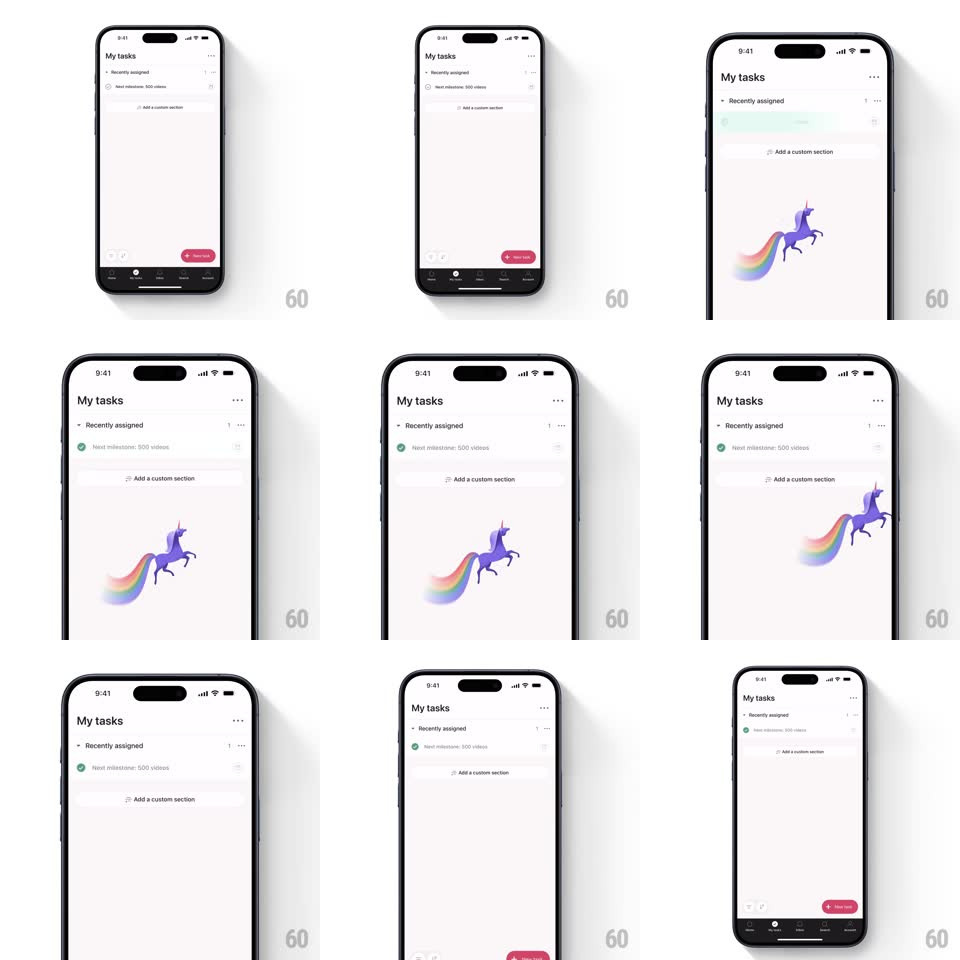

Media
Frame-by-frame

Rebuild this interaction 1:1: Asana's celebration creature - checking off a task in My tasks triggers a purple unicorn with a rainbow trail leaping across the screen while the row's check fills green and the task settles.

Rebuild this interaction 1:1: Asana's celebration creature - checking off a task in My tasks triggers a purple unicorn with a rainbow trail leaping across the screen while the row's check fills green and the task settles.
## Integration
Integration: stack-agnostic spec - springs given as stiffness/damping, timed motions as duration + curve; map every value to your framework and animation library of choice.
## Scene
"My tasks" list, "Recently assigned" section, a task row ("Next milestone: 500 videos") with a circle checkbox. The celebration: a purple unicorn illustration galloping across the full screen width, a soft rainbow trail behind it.
## Motion spec
Pattern: full-screen celebration flythrough on task completion.
- Tap the circle: it fills green with a springy check draw (scale 0 -> 1.15 -> 1, spring ~460/18; check stroke 200ms) and the row flashes a mint wash (300ms fade).
- 150ms later the unicorn enters from the left edge, below the fold of content: it gallops right-to-left across the screen over ~1.4s (ease-in-out), legs cycling, with a gentle arc (rises to mid-screen, dips at exit) and a slight rotation (+-6deg) synced to the gallop.
- The rainbow trail streams behind it, segments fading out 300ms after being laid - the trail never outlives the moment.
- Unicorn exits the right edge; the task row's text fades to gray simultaneously, and the list resumes.
- Full sequence ~2s; tapping during it does not retrigger or stack a second unicorn.
## Calibration
- One creature per completion; it plays BELOW content (no overlay dim) - the list stays readable.
- The check animation precedes the creature - cause, then confetti.
## Reduced motion
Check fills statically; no creature.
## Don't miss
- The unicorn is a reward, not a blocker - interaction continues during the flight.
- The trail is the motion blur - without it the gallop reads as a slide.